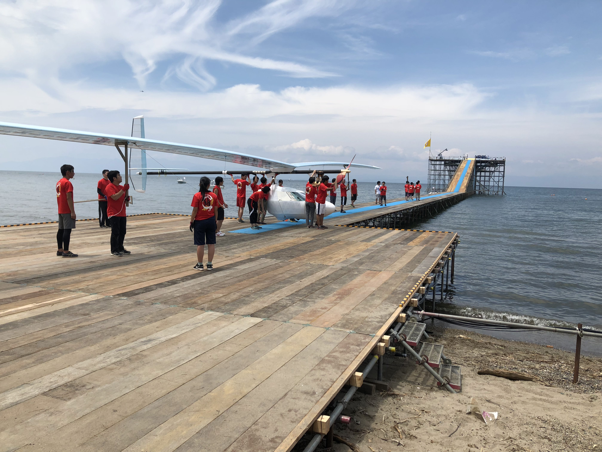
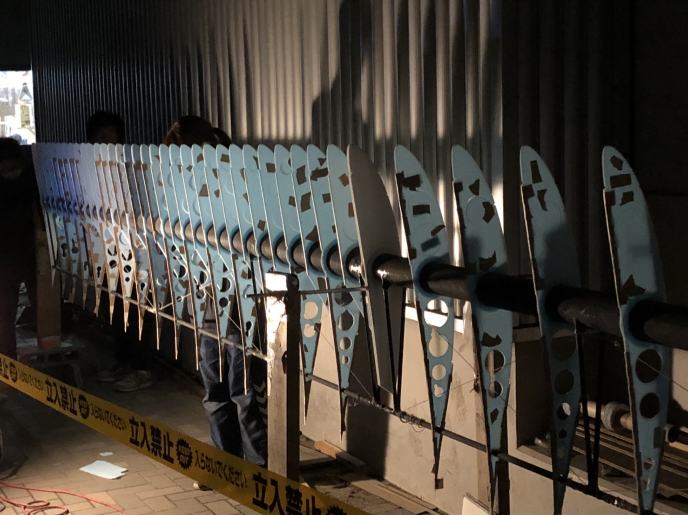
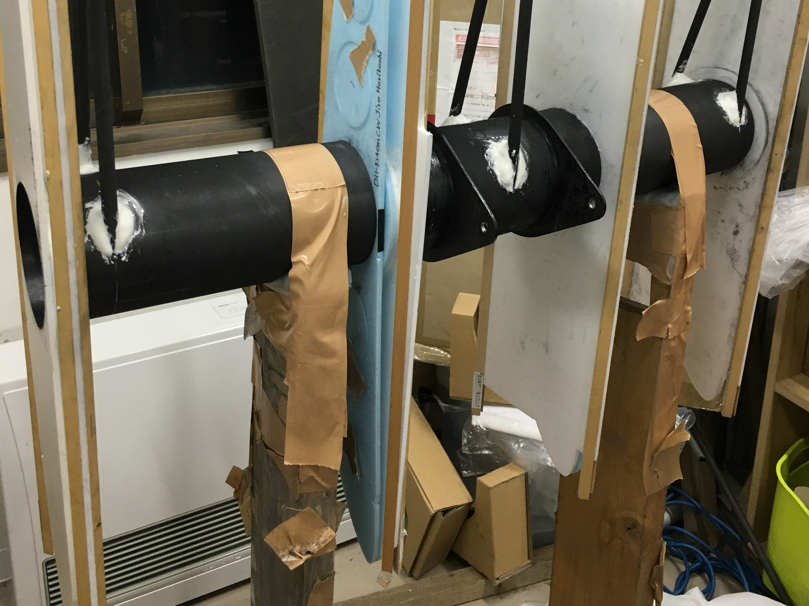
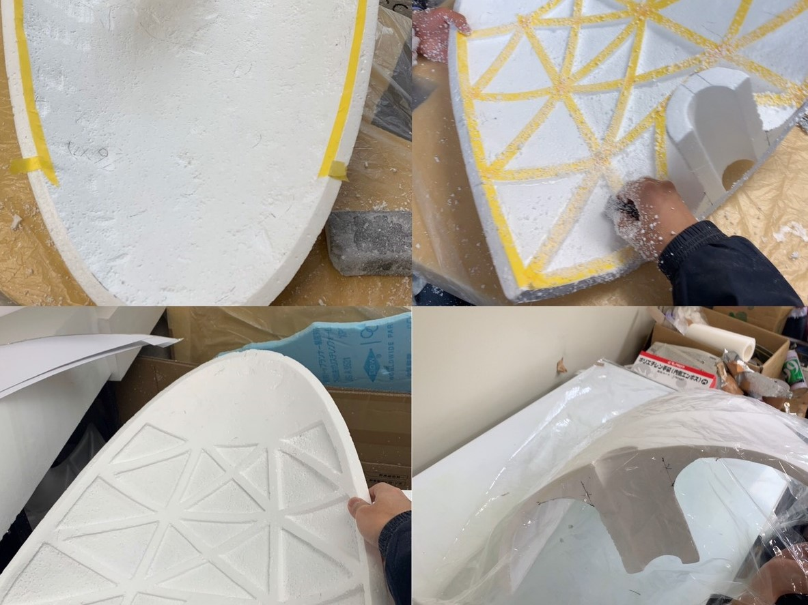
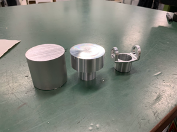
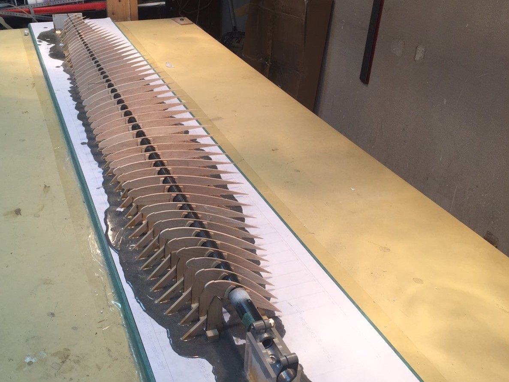
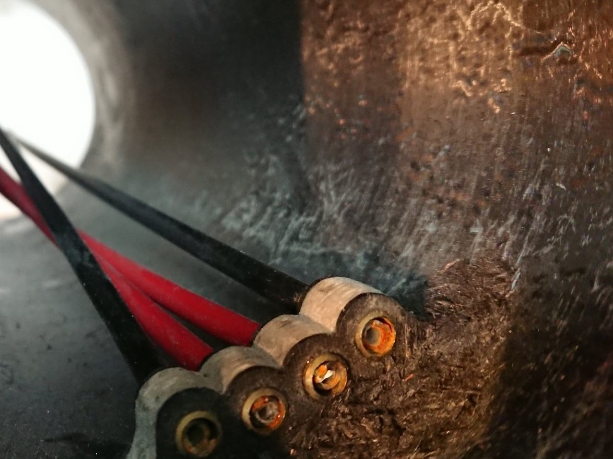
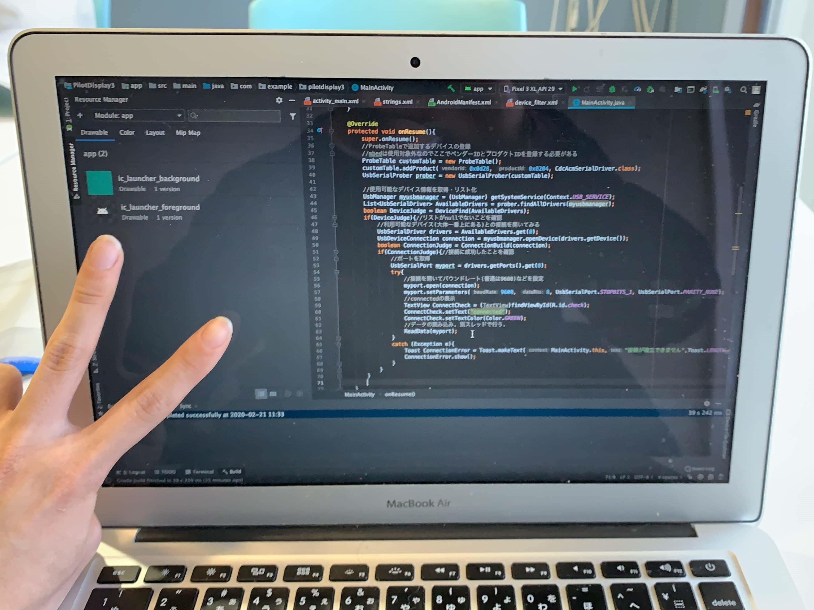

班紹介
-

Windnautsには現在7つの班があります。
1年生は秋にいずれかの班に所属してもらうことになります。
あなたはどの班に魅力を魅力を感じるでしょうか。 -

翼班
翼班はその名の通り翼を作っている班です。
翼は大きいので作業量は多いですが完成した時の達成感は凄いです。
作業はまさに飛行機を作っていることを実感できます。
翼は飛行機の命ともいえるので精度をとことん求めて作業を行なっています。
作業に楽しく没頭できる班です。 -

コックピット班
コックピット班は、その名前の通り機体のコックピットを製作する班です。
作業内容としては、切り出したカーボンプレートを部品の形にやする作業が多いです。
また、コックピットはパイロットが乗る場所であり、サドルの位置などはパイロットに合わせて年ごとに変えています。
他班がそれぞれ時間をかけて作った大切な大切なパーツが取り付けられるコックピットは、縁の下の力持ちの様で魅力に感じています。 -

フェアリング班
フェアリング班は、パイロットの乗っているコクピットの周りを覆う白い部分を作っています。
その目的は、空気抵抗を減らすこと、パイロットが快適な環境で飛べるようにすることなどです。
電熱線やカッター、やすりを使って発泡スチロールから形を作っています。 -

駆動班
駆動班はプロペラとペダルの連結部分の部品を担当しています。
作業では、旋盤やフライス盤という機械を用いて金属を一から加工していきます。
小さなネジやペダルの回転部分など、様々な部品を自分たちで制作します。
活動場所は青葉山にある創造工学センターが中心です。
-

プロペラ班
Windnautsのプロペラは他の翼と同じように桁にリブが垂直に取り付けられ、それをプランク(外皮)で覆った構造をしています。
人力飛行機はプロペラを回すことで推力を得ており、長時間の飛行には小さいエネルギーで大きな推力を生み出す効率の良いプロペラが必要になります。
プロペラ班では滑らかな曲面を出すためにリブの精度を追求したり、鏡面反射するまで表面を均一にしたりすることで美しく効率の良いプロペラを実現しています。 -

操舵班
操舵班では、操縦するための機構を作っています。 尾翼と操縦桿をワイヤーで繋ぎ、操縦桿を操作すると尾翼が動くという機構です。 目立ちにくい部分ですが、飛行機を飛ばすのに大切な部分です。 -

電装班
電装班は主に飛行中にパイロットが見る計器や、飛行データを収集するための機器を製作する班です。
半田ごて片手に部品と格闘したかと思えばパソコンに向き合ってプログラミングをしたりと活動は多岐に渡ります。
他の班より大胆な仕様変更が可能で自分のやりたいことをそのまま反映できるのが特徴です。